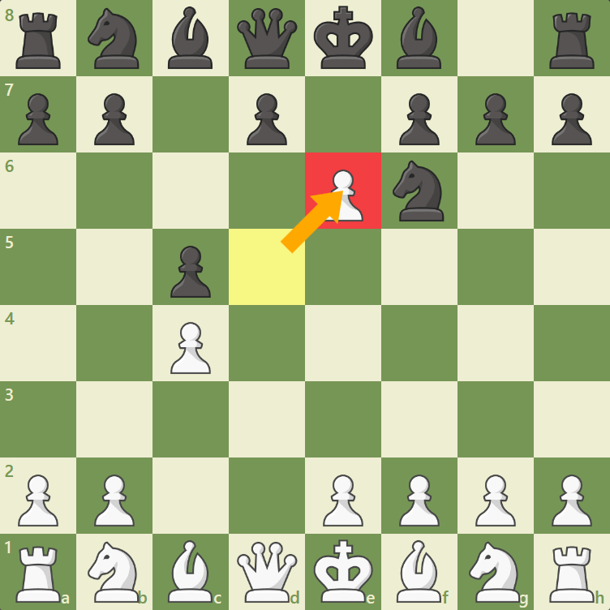
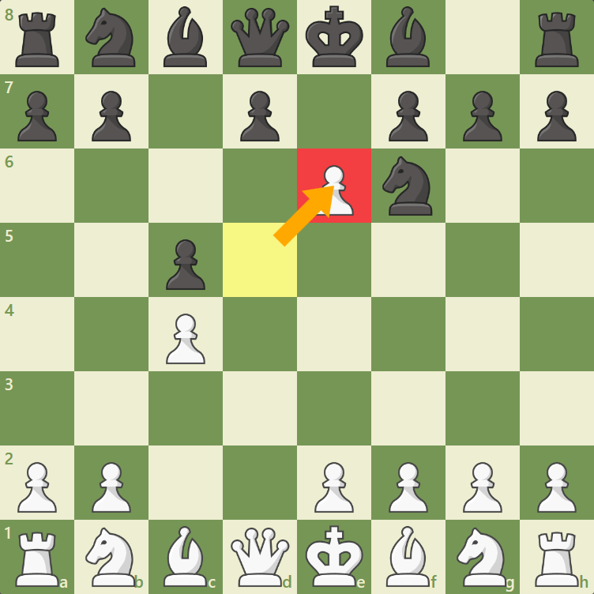
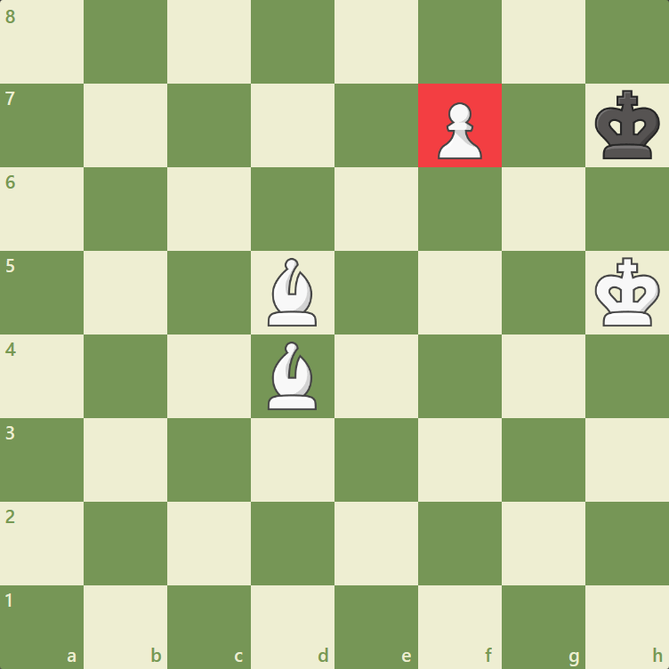
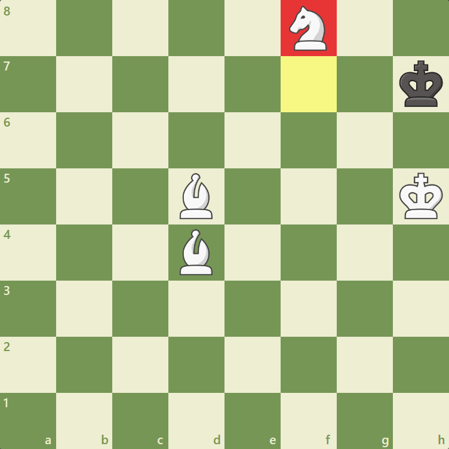

The Pawn
The pawn is the least powerful chess piece, but it can be promoted into any
other chess piece (except for a king). As Philidor once said, "Pawns are the soul of chess!"
When a game begins, each side starts with eight pawns. The pawns begin the game on the second
and seventh rank: White's pawns start on the second rank, while Black's pawns are located on the seventh rank.

A pawn is worth one point. It is considerably less valuable than the other pieces by itself, but in many positions, three pawns are equal to or even stronger than a minor piece (knight or bishop).
How the Pawn moves:
As mentioned, the pawn is the least powerful piece. A pawn moves forward one square unless it is that pawn's first move. If it is the pawn's first move, then it can move one or two squares. Please note that if a pawn has already been moved, it can never move two squares again.

The pawn can only move forward if it is not blocked by another piece. In the following diagram, the white pawn on the e4-square can't move because it is blocked by the black pawn on the e5-square.
How The Pawn Captures And En Passant
The pawn attacks or captures one square diagonally in each direction. In the diagram below, we can see that the pawn on the e4-square attacks the squares d5 and f5.

In the following position, the pawn on the e4-square can capture the black pawn on f5 but NOT the pawn on e5.

There is a special rule in chess regarding pawn captures known as en passant. If a white pawn is on the fifth
rank and a black pawn's first move places it directly next to the white pawn, then the white pawn can capture
the black pawn as if it moved just one square. This rule also works if a black pawn is on the fourth rank and
a white pawn's first move places it directly next to the black pawn—in this case, the black pawn may capture
the white pawn as if it moved just one square (but only for this move)!
In the following diagram, Black has just played e7-e5. Since the black pawn moved two squares on its first
move and because it is directly next to the white pawn on d5, White can capture the e-pawn with dxe6 (but only
for one move).
 

Promotion
So far the pawn doesn't seem too powerful, right? Well, pawns have the unique ability to be able to promote
into a knight, bishop, rook or queen! If a white pawn reaches the eighth rank or if a black pawn reaches the
first rank, then that pawn gets promoted. It is up to the player who is promoting a pawn to decide which piece
they are promoting to, although most of the time promoting to a queen is the desirable choice.
In the image below, we can see that moving the a7-pawn to a8 results in promotion! Promoting to a queen
(or a rook) will lead to checkmate!
In rare instances, underpromotion is best. Underpromotion occurs when a pawn is promoted to a knight, bishop, or rook instead of a queen. In the following position, underpromoting to a knight is the best move because it creates a checkmate!
 